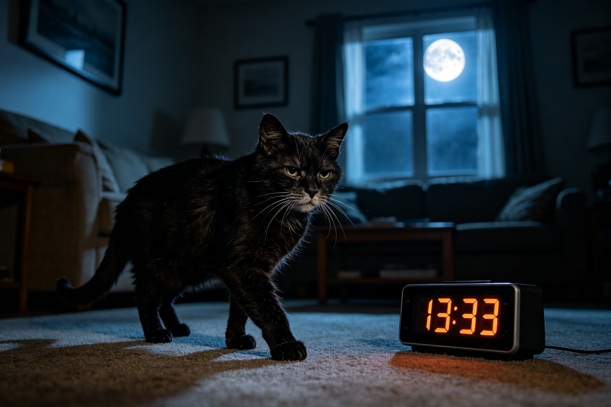
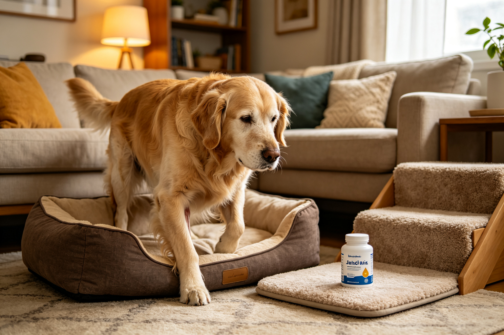
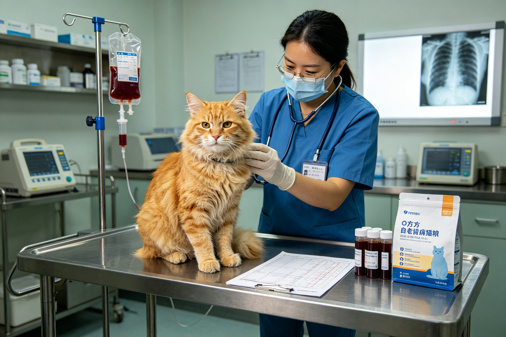
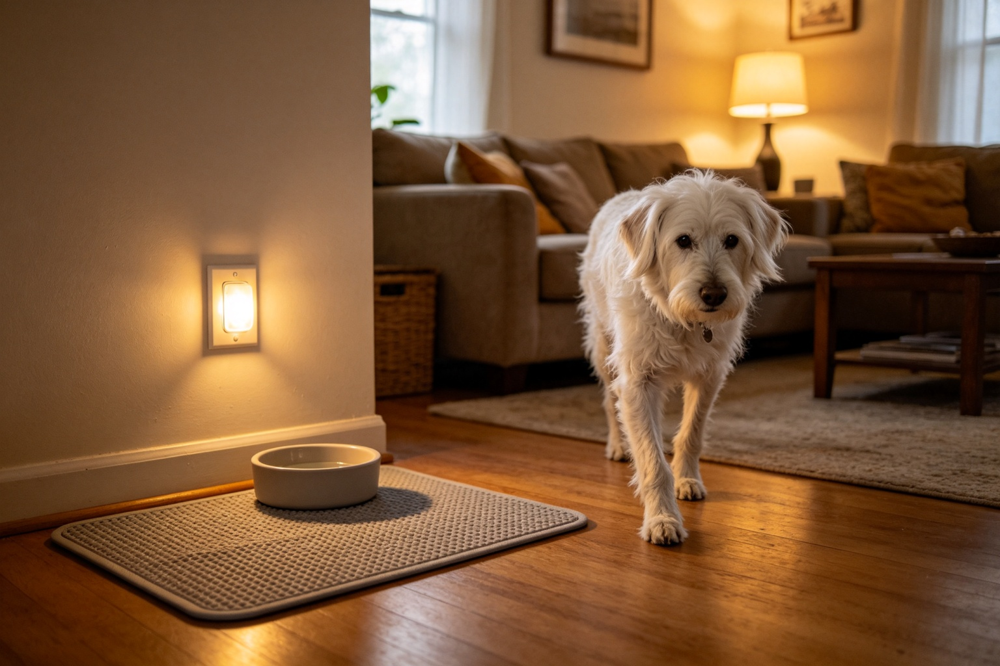
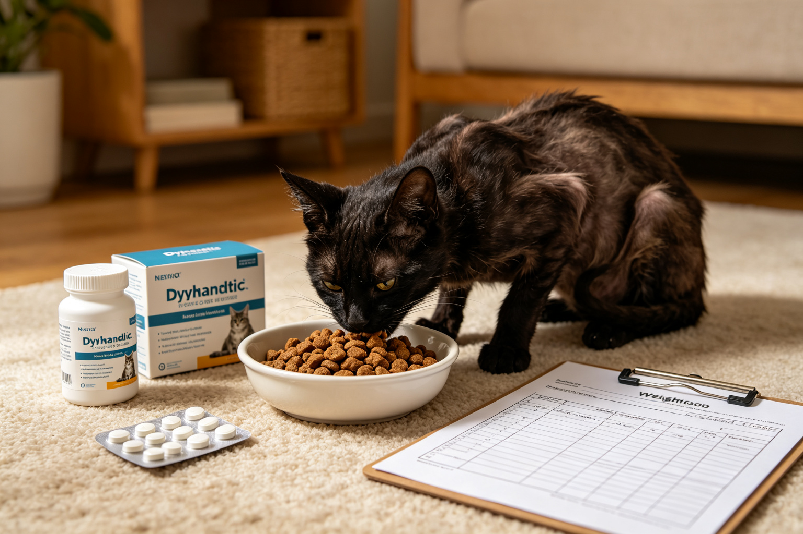
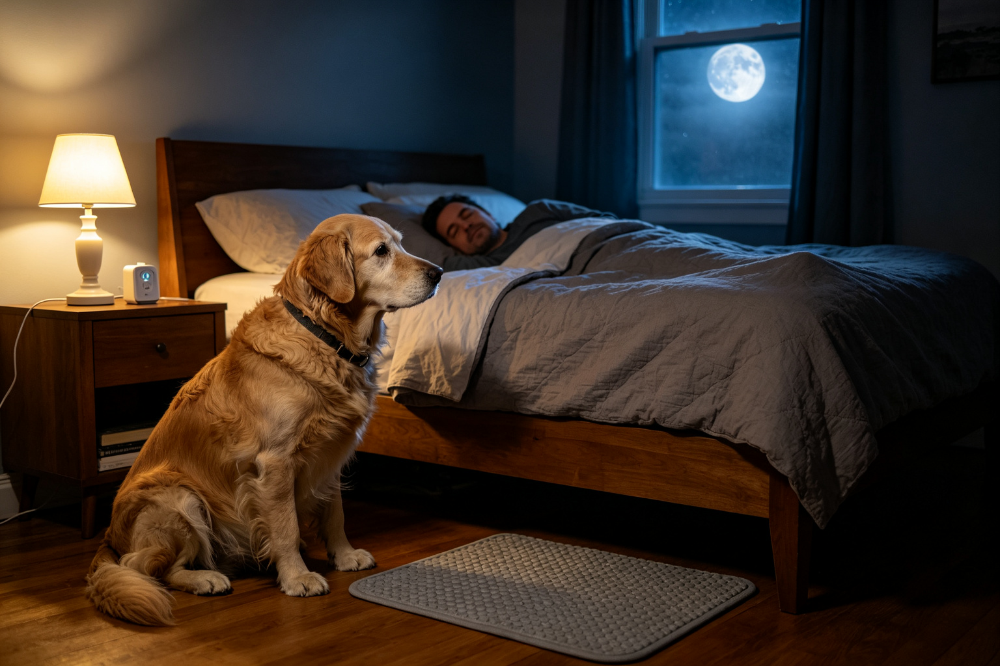
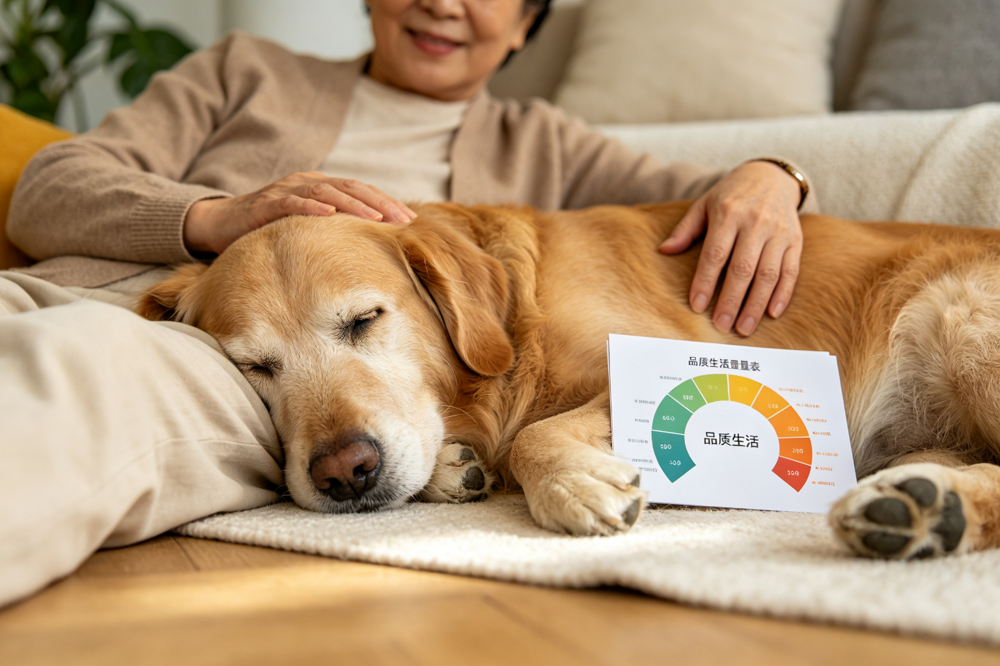

老貓認知障礙CDS：症狀與家庭管理
老貓半夜嚎叫、忘記貓砂盆位置、對主人反應變差——可能不是「老了正常」，而是貓咪認知障礙（CDS）。從症狀辨識、獸醫診斷到藥物與環境調整，完整管理指南。...

高齡犬關節炎：5個疼痛訊號與管理
老狗走路變慢、不愛跳沙發、起床後僵硬——這些可能是關節炎的早期訊號，不是「老了正常」。從疼痛行為學、5個易忽略訊號、藥物與復健管理到居家環境改造，完整指南。...

老貓慢性腎病CKD：分期與飲食管理
慢性腎病是老貓的頭號殺手——超過30%的10歲以上貓咪患有不同程度的腎病。從IRIS分期標準、症狀辨識、處方飼料選擇、皮下輸液操作到定期追蹤指標，完整的家庭照護...

高齡寵物聽力視力退化：適應與環境改造
老貓老狗的聽力和視力會隨年齡退化——這是正常老化，但可以透過環境改造大幅提升生活品質。從退化症狀辨識、安全居家改造、與聽力視力受損寵物的溝通方法到何時需要就醫，...
老狗瓣膜性心臟病：症狀與治療
慢性瓣膜性心臟病是小型老狗最常見的心臟病——超過70%的10歲以上小型犬有不同程度的心臟瓣膜退化。從心雜音分期、症狀辨識、常用藥物（匹莫苯丹、利尿劑）到運動與飲...

高齡貓甲狀腺機能亢進：症狀與治療
老貓體重下降但食慾變好、喝水變多、過度活潑——這可能不是「健康」，而是甲狀腺機能亢進。超過10%的10歲以上貓咪患有此病。從症狀辨識、診斷方法、治療選擇（藥物、...
寵物安寧照護Hospice：生命品質管理
當寵物進入生命最後階段，治癒不再是目標——維持生命品質、減輕痛苦、陪伴走過最後旅程才是。從安寧照護的定義、疼痛評估、居家安寧準備、安樂死的時機判斷到悲傷輔導，完...

高齡寵物睡眠變化：認知功能關聯
老狗半夜醒來走來走去、嚎叫、找不到窩——這不是「睡不好」，可能是認知功能退化或身體不適的訊號。從高齡寵物的睡眠生理變化、夜間躁動的常見原因、何時需要就醫到改善睡...

寵物臨終判斷與安樂死時機
何時該說再見？這是飼主最難的決定。品質生活量表（Quality of Life Scale）提供了一個客觀的評估框架，幫助你在情緒與理性之間找到平衡。從評估項目...